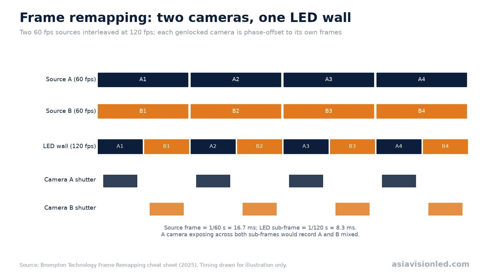

Multi-Camera XR LED Walls: How Frame Remapping and GhostFrame Work
An LED volume solves many problems a green screen creates. The talent sees the world they are standing in, reflections are real and the shot is finished in camera. But tracked in-camera VFX has a built-in limit. The background is rendered for the position of one tracked camera. Move a second camera to another angle and it sees the same image, with the wrong perspective. For multi-camera dramas, live shows and broadcast, that limit is expensive.
Processor makers now offer a way round it. Brompton calls it Frame Remapping and Megapixel calls its toolset GhostFrame. Both use the spare speed of the LED wall to show several images in turn, so each camera captures only its own. This guide explains how it works, what it asks of the LED wall, and the trade-offs that should be in your plan before you book a stage. If you are speccing a volume from scratch, read our XR LED wall spec guide first.
Why Tracked XR Normally Serves One Camera
Camera tracking updates the background perspective as the camera moves, which creates the illusion of a real location. Brompton's own explanation states the catch: the scene only looks correct for one camera, because the visual effects are rendered for one camera position. Other cameras see the background from the wrong angle. Productions have usually worked around this by switching the render to whichever camera is live. That rules out true simultaneous coverage and makes the off-air camera's footage unusable as a backup angle.
How Sub-Frame Multiplexing Works
The trick relies on the fact that a good LED wall refreshes much faster than a camera needs. The processor takes several content streams and shows their frames one after another, faster than the eye can separate. Each camera is genlocked to the same reference and offset in phase so its shutter is open only while its own frame is on the wall.
Brompton's cheat sheet gives the basic example. Two 60 fps sources are interleaved and displayed at 120 fps. Camera A is timed to the A frames and camera B to the B frames. To a person on set the two images look superimposed. To each camera, only one is visible.
Figure 1 draws that timing.

What the two main toolsets offer
- Brompton Frame Remapping runs on Tessera processors through a firmware update. Brompton says it works with its High Frame Rate and Ultra Low Latency features. It can also put solid-colour frames between the content frames: black frames to reduce motion blur, or blue or green frames so a second camera records a matte for post. Brompton quotes up to "4+ cameras" on one volume, depending on panel refresh rate and camera properties, and uses its ShutterSync feature to match LED timing to the camera shutter.
- Megapixel GhostFrame runs on the HELIOS processing platform. Its MultiSource feature can show up to four video feeds at once. Megapixel notes that the number of sub-frame slices depends on the tile, so you need the tile maker's documentation. GhostFrame Chroma and Track add chroma-key backgrounds and hidden tracking patterns, and Megapixel's image inversion keeps them invisible to people on set.
On the media-server side, Disguise's user guide explains that the server still sends a normal 4K60 signal. The processor samples different regions of that input raster for each sub-frame. In practice the content for each camera is packed into separate areas of one output, and those areas must match the processor's mapping.
What It Asks of the LED Wall
Refresh headroom
Every extra camera divides the frame into more slices, and each slice still has to be a clean, complete image on the wall. That is why both makers tie camera count to panel refresh. A wall that is barely flicker-free for one camera at 50 or 60 fps has no time to spare. Look for high-refresh panels and ask the supplier for sub-frame results with the processor you plan to use. Our high-refresh buying guide explains why the headline refresh figure is not enough.
The right receiving cards
Frame remapping and GhostFrame are processor features. The panel has to be built with receiving cards for that processor family, or certified for it. This is the single most important question to settle before you order panels. A panel that is excellent on one control system may not support another system's multi-camera mode at all.
Brightness and exposure
Each camera now sees the wall for only part of the frame. Pixotope's guide to camera switching for XR says each camera's effective exposure time shrinks as the camera count rises. With four cameras, it is roughly a quarter of the normal exposure. Crews make up for it with more light, a wider aperture or more gain, and the wall needs the brightness headroom to keep the background correctly exposed. Plan this with your director of photography before you fix lens and shutter choices.
What people on set see
Without inversion or similar processing, crew and talent see a blend of every stream. Some performers find that distracting, and it changes the light the wall casts on faces and props. Decide early whether the blended look is acceptable or whether you need a toolset that hides the extra frames from the eye.
Beyond Film: Broadcast and Live Uses
Multi-camera studios gain the most, because a broadcast set is shot from several angles at once. Sub-frame features also have uses that need only one camera: a hidden green frame for a safety matte, hidden tracking markers, or black frames to cut motion blur.
Figure 2 shows a typical multi-camera broadcast studio built around LED surfaces.

For studio-specific requirements beyond multi-camera, see our broadcast studio LED wall buying guide.
A Planning Checklist for Multi-Camera XR
- Frame rate and camera count. Write down the project frame rate (24, 25, 30, 50 or 60 fps), how many cameras need their own perspective, and their shutter angles.
- Sync chain. One reference generator for cameras, processor and render nodes. Record the phase settings for each camera, as Megapixel's alignment procedure recommends.
- Processor and receiving cards. Name the processor model and confirm that the panel's receiving cards support its multi-camera mode at your frame rate.
- Render capacity. Each perspective is a separate render, so the media servers must keep up with every camera at once, not just one.
- Lighting budget. Agree how the crew will recover exposure: wall brightness, extra light, aperture or gain.
- Test day. Shoot the real cameras, lenses and shutter settings on a section of the wall before the main build. Our camera flicker guide lists the artefacts to look for.
Where Asia Vision Fits
We build the LED panels; the multi-camera feature lives in the processor you choose. For XR work our main platforms are E-PRO, a rental system built for XR film and video with COB or SMD modules from P1.953 to P4.81, and COB Z, a flip-chip COB rental panel with refresh of at least 7680 Hz. For permanent studios we offer the RH-PRO fine-pitch COB, also rated at 7680 Hz or more, with dual power and dual receiving cards.
Tell us which processor platform your stage runs before you order. We will confirm which receiving-card options can be fitted to the panels you are considering, and you will get that answer in writing. Panels ship with a 3-year warranty and 18-day factory dispatch. Our 17 m × 4 m XR volume case study shows a single-camera build of the kind multi-camera upgrades start from.
FAQ
Sources
- Brompton Technology, "Frame Remapping" feature page and "Frame Remapping?" cheat sheet (2025); "ShutterSync" feature page.
- Megapixel, "GhostFrame" product page and "GhostFrame on HELIOS Technology Overview" (2023).
- Disguise User Guide, "Multi Frame LED Processor Mapping".
- Pixotope Help Center, "Camera Switching for XR/LED Workflows: A Practical Guide".
- Asia Vision product pages: E-PRO, COB Z, RH-PRO (specifications as published).
Related Articles
- Virtual Production LED Guide 2026: Building an XR Volume
- XR LED Wall Spec Guide for Virtual Production 2026
- LED Video Wall Processor Buying Guide for 2026 Projects
- Broadcast Studio & Virtual Production LED Guide 2026
Planning a multi-camera XR stage? Send us your frame rate, camera count and processor platform. We will recommend panels and confirm receiving-card options with you before you commit, or contact our team directly.